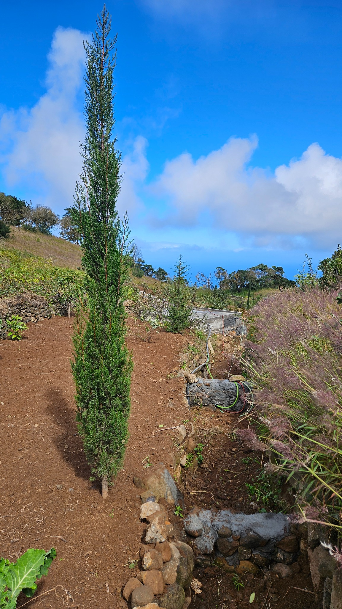
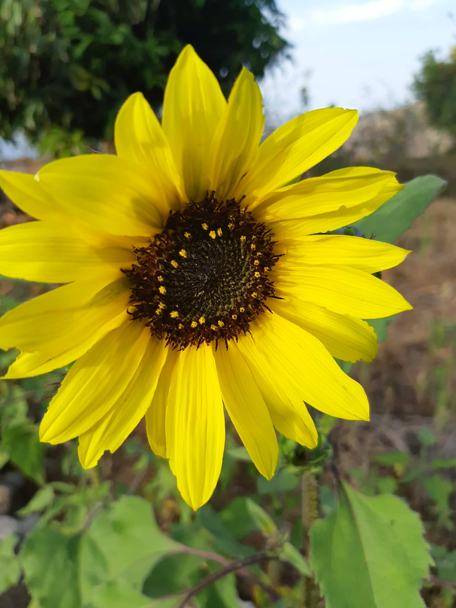
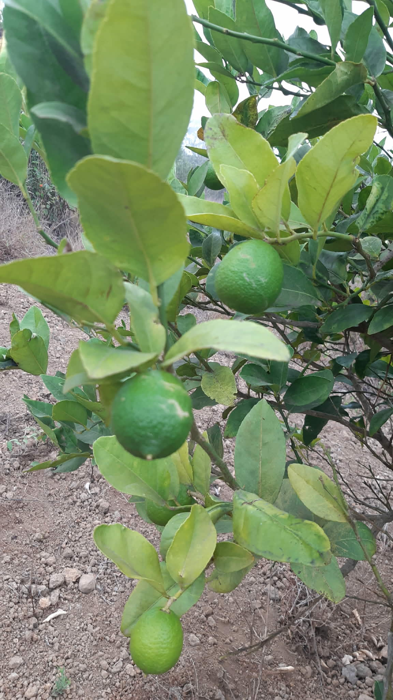
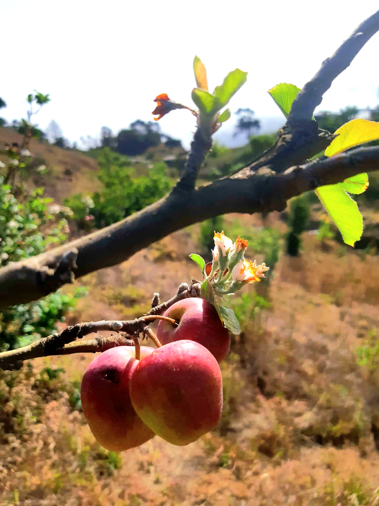
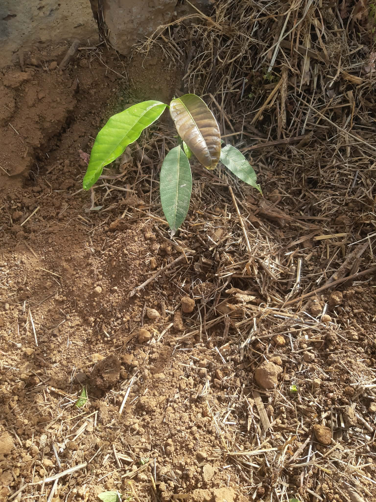

Adega & encontros
Um espaço onde os sabores da terra se encontram com histórias, amizade e tradição.
Um refúgio de ecoturismo e permacultura, criado entre o nevoeiro das montanhas e o azul do mar. Aqui, a memória transforma-se em futuro.
Cada árvore plantada guarda uma história, cada raiz honra uma origem e cada fruto ajuda a construir um legado. A Vila é um lugar para abrandar, aprender com a terra e regressar ao essencial.
Descubra os espaços que ligam agricultura, alojamento, cultura e contemplação.
Citrinos, videiras, jacarandás e dragoeiros crescem lado a lado, alimentados por rega gota-a-gota.
Um percurso de aromas, cores e colheitas que muda com cada estação.
Patrocine uma árvore, receba um token único e acompanhe a sua evolução ao longo do tempo.

Disponível
Disponível
Disponível
Disponível
Nova plantaçãoPrimeiro vive-se no digital. Depois, regressa-se à Corda para sentir a terra.
Três espaços intimistas com vista sobre as montanhas, pensados para silêncio, descanso e ligação à natureza.
Vindimas, provas, histórias ao lume e música crioula junto ao Dragoeiro ou na Varanda Filosófica.
Uma ligação transparente: localização, fotografias, mensagens e cada novo capítulo da sua árvore.
Plantação, floração, colheitas e encontros. O ritmo da Vila contado por quem cuida dela.
Um espaço onde os sabores da terra se encontram com histórias, amizade e tradição.
Colher com as próprias mãos é descobrir que cada alimento começa numa raiz.
Quando a música encontra o lume, a conversa fica para sempre.
Token demonstrativo: VMT-2026-0012
O certificado digital está pronto.